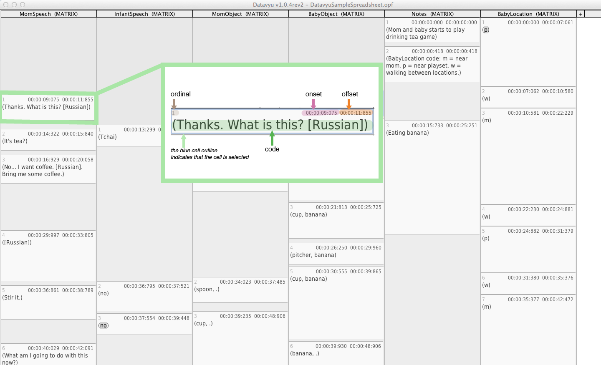

Spreadsheet Overview¶
The Datavyu Spreadsheet is where coders record observations. The spreadsheet is the core of Datavyu. Coders can record observations and link them directly to timestamps in the data source when they Configure Columns and Codes.
For a brief introduction to some of the spreadsheet’s components and capabilities, watch the spreadsheet walkthrough video:
Each user-defined column has its own column in the spreadsheet. Cells are column entries, boxes in the column, where coders record their observation data as codes. Cells follow each other in sequence: looking vertically down a column shows the sequence of observations for that column.
A typical Datavyu spreadsheet with an example of five columns and Temporal Alignment turned on. Note the plus icon in the top right, which you use to add new columns.
Datavyu automatically links the times coded in the spreadsheet to the current time in the data source. This allows coders to record the onset and offset times of events in the spreadsheet. Coders can also jump to a relevant time in the data source by selecting a specific cell in the spreadsheet and pressing find (+) on the Controller.
Spreadsheet Tabs¶
Datavyu allows users to open multiple spreadsheets at one time. When the program opens, it opens a blank spreadsheet. This spreadsheet can be used to create a new file or it can be closed if you are working on pre-coded spreadsheets. Feel free to open as many spreadsheets as desired.
Users can work on multiple spreadsheets at one time. When finished with coding, please be sure to save each individual spreadsheet.
Columns¶
Datavyu uses columns to group together related observations. In general, coders will code the data source column-by-column meaning that they code one entire column before coding a new column.
Using the Code Editor, you can configure columns to represent any number of observations.
Columns have codes, which represent the feature that you are observing. For instance, a code could be “Left hand touch”, or “Smiling”, or “Look left.” When coding the data source, coders can record the presence or absence of these codes and/or potential values within them. Columns can have as many or as few codes as you want. If you want to score durations without scoring codes, you can leave the default code as is and ignore the <code01> prompt.
Also note that column names are limited to the letters of the aphabet, numbers and the underscore symbol (but numbers and underscores cannot be the first character of the name) to eliminate potential confusion in scripting and SPSS analyses. The column configuration tutorial provides instructions for configuring columns.
Hide and Show Columns¶
To hide a column, select the column by clicking on its name at the top of
the spreadsheet. The selected column will have a blue background.
You can select multiple columns by Cmd -clicking (on Mac) or
Ctrl -clicking (on Windows). Then, in the
Spreadsheet menu, select Hide Selected Columns.
You can also control each column’s visibility from the Column List, which you access from the Spreadsheet menu. The Column List shows all of the columns in the current spreadsheet, and includes a checkbox, which you can use to toggle column visibility.
If you wish to show all columns you can do so with the Show All Columns menu option from the Spreadsheet menu.
Rearrange Columns¶
To rearrange the order of columns within the spreadsheet, simply click the column’s name and drag it left or right to the desired location.
Cells¶
Each cell represents an observation scored by the coder.
Minimally, Datavyu displays three values for each cell, but you can ignore one or all of these values.
- onset: the first time value displayed on the top of the cell. If you don’t code this value, the cell will display the default value of 0:00:00:000. You can code a time value to mark the beginning of an event or to tag the approximate time of an event.
- offset: the time value displayed on the top right of the cell. If you don’t code this value, the cell will display the default value of 0:00:00:000. You can code a time value to mark the end of an event or to tag the approximate time of an event.
- ordinal: the cell ordinal indicates the position of the cell within the column. The first cell (the one with the earliest onset or the first cell you code if you do not mark onsets) would be number 1, the second number 2, and so on. Ordinals are automatically coded and updated as you code your data source. You will never need to set the ordinal.
The following image labels each component within a Datavyu cell.
Spreadsheet Customization¶
Datavyu allows you to modify the spreadsheet by including options that you can activate or deactivate, depending on your needs.
Zoom¶
By default, the Datavyu spreadsheet uses one font size for the user-input codes in cells. You can increase this font size by choosing Zoom from the Spreadsheet menu. However, the font size for the onset and offset times do not change.
You can also modify zoom using keyboard shortcuts:
cmd +/alt +zooms incmd -/alt -zooms outcmd 0/alt 0resets the zoom to the default level
Temporal Alignment¶
Temporal alignment is an important feature of Datavyu. When temporal alignment is active, Datavyu groups cells based on their onsets and offsets, visually representing the period of time each cell occupies. This Temporal Alignment video highlights the differences between active and inactive temporal alignment:
Temporal alignment allows you to visualize what occurred at what time so you can compare event sequences across columns. When coding, you should ensure that temporal alignment is active.
At left is a spreadsheet with temporal alignment enabled; at right is the same spreadsheet with temporal alignment disabled. Note that the cells contain the same information, it is only their presentation changes. Note also that enabling temporal alignment makes it easier to code and alllows you to visualize the relative length of events and their relations across columns.
Toggle Temporal Alignment¶
You can toggle temporal alignment using the cmd T
keyboard shortcut, or by selecting Temporal Alignment
from the Spreadsheet menu.
Keyboard Shortcuts¶
We have provided a simple list of the major shortcuts used in the Datavyu Spreadsheet.
| Action | Mac | PC |
|---|---|---|
| Temporal Alignment | CMD T | CTRL T |
| Snap to Region | CTRL NUM+ | CTRL NUM+ |
| Clear Snap to Region | CTRL NUM- | CTRL NUM- |
| Jump to Current Onset | NUM+ | NUM+ |
| Jump to Current Offset | SHIFT NUM+ | SHIFT NUM+ |
| New Cell to the Left | CMD L | CTRL L |
| New Cell to the Right | CMD R | CTRL R |
| New File | CMD N | CTRL N |
| Open | CMD O | CTRL O |
| Save | CMD S | CTRL S |
| Save As | CMD SHIFT S | CTRL SHIFT S |
| Quit Datavyu | CMD Q | |
| Hide Datavyu | CMD H |